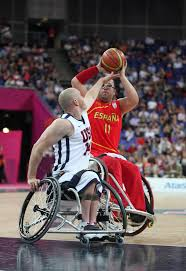

El baloncesto o básquetbol en silla de ruedas es la modalidad de este deporte practicada con silla de ruedas, básicamente para personas con discapacidad física. Se han adaptado las reglas del baloncesto en las particularidades de las sillas de ruedas, armonizando también los diversos niveles de discapacidad de los deportistas.
© Página realizada por M.L.S. en 2018.